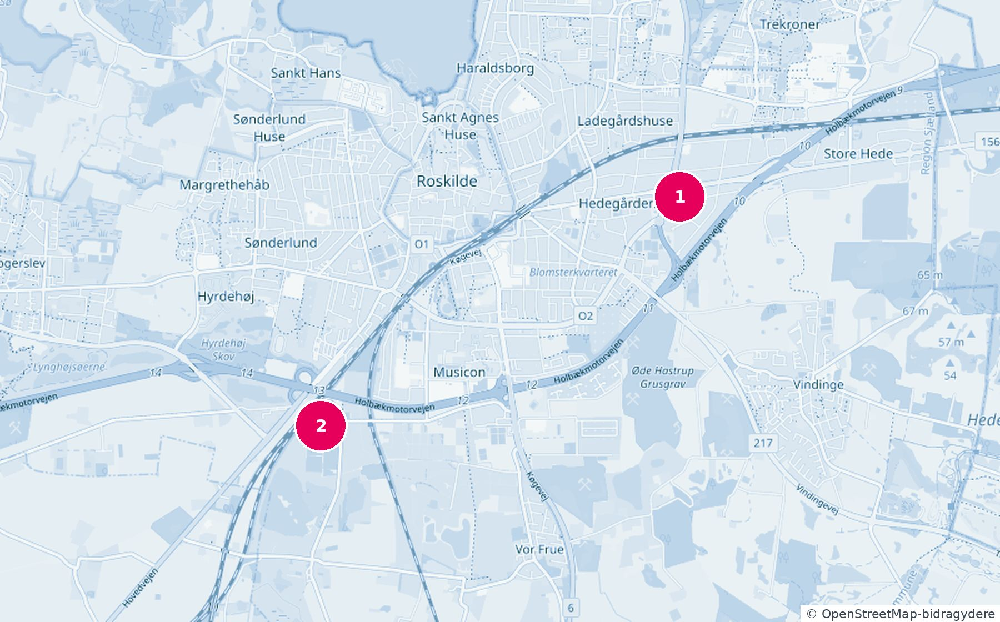

Padel hele året. Sammen.
Træning hver uge med trænere, gode makkere og masser af grin. Indendørs hos PadelPit i Roskilde og om sommeren også ude på klubbens baner i Darup ved Dyrskuepladsen. For børn, unge og voksne.
Få besked, når vi åbner for tilmeldingerSikr din pladsEt rigtigt klubtilbud i padel. Til en pris, hvor alle kan være med.
Padel er sjovt fra første bold. Man er altid fire på banen, bolden er i spil, og man griner mere end i de fleste andre sportsgrene. Nu kan du spille det hele året i en klub, med faste hold og en træner, der kender dig.
- Træning hele året, inde og udeFaste baner hos PadelPit i Roskilde og om sommeren også klubbens egne baner i Darup ved Dyrskuepladsen.
- Medlemskab af PadelPit uden gebyrSom medlem af RTK er du også medlem hos PadelPit uden at betale deres medlemsgebyr, og du booker baner til medlemspris, både i Roskilde og i Karlslunde. Det gælder, så længe aftalen med PadelPit løber. Den gælder hele 2027 og forventes at fortsætte.
- Gratis adgang til udebanerne i DarupBook en bane i ForeningLet, klubbens medlemsapp, og spil med dine nye makkere, når det passer jer.
- Camps i ferierneI vinter-, påske-, sommer- og efterårsferien, med delvis egenbetaling. For juniorerne og eventuelt også for voksne.
- Et fællesskab, ikke et kursusDu bliver en del af Roskilde Tennis Klub med alt, hvad det giver.
Fire på banen. Én bold. Og en ny flok at spille med hver uge.
Tennis og padel i samme klub. Det bedste fra begge verdener.
I Roskilde Tennis Klub står tennis og padel på lige fod. De to sportsgrene hører naturligt sammen: i begge spiller man bolden over et net, og fodarbejde, timing og spilforståelse er det, der tæller. Meget af det, du lærer i den ene, kan du bruge i den anden, og mange får glæde af begge dele. Når de ligger i samme klub, deler de anlæg, frivillige og fællesskab, og du kan spille den ene om sommeren og den anden om vinteren, eller begge hele året.
Vi er en bred klub for hele familien, med et stærkt fællesskab, hvor nye er meget velkomne. Der er hold for børn og juniorer, motionister og konkurrencespillere, holdkampe og sociale arrangementer året rundt. Og medlemmerne hjælper selv med at gøre banerne klar til sæsonen.
Centralt i byen ligger vores smukke gamle klubhus med 7 grusbaner.
6 grusbaner, 2 padelbaner med lys og den nyrenoverede RTK-hal med 4 indendørs tennisbaner, omklædning og caféen Sporvognen.
Klubbens officielle partnere. Proshoppen i RTK-hallen har udstyr fra Babolat, også til padel, og vi strenger ketsjere i klubben. Som medlem får du rabat hos Racketlife.
Holdkampe, klubmesterskaber, sociale aftener og hjælp til at finde en makker. Det er her, de fleste finder deres nye spillevenner.
Læs mere på roskildetennisklub.dk.
Find dit hold
Første træning er onsdag 13. januar og lørdag 16. januar 2027. Holdene lægges primært efter alder, niveau og de dage, I kan. Det præcise tidspunkt får I sammen med pladsen. Alderen pr. 1. januar 2027 gælder både for hold og udemedlemskab, og 10 til 12-årige vælger selv mellem Junior og Junior+. Passer begge, så sig ja til begge, så finder vi det rigtige efter niveau. Børn og unge, der aldrig har prøvet padel, er meget velkomne. Voksenholdet kræver padelniveau 1,5.
Junior
- Onsdag mellem 15 og 17.30 eller lørdag mellem 9 og 13
- Træner med hver gang: en lønnet træner og en frivillig hjælper
- 8 til 10 spillere på 2 baner
Junior+
- Onsdag mellem 15 og 19 eller lørdag mellem 9 og 13
- Træner med hver gang
- Delt i to aldersgrupper
- 8 til 10 spillere på hvert hold
- Dygtige 16 og 17-årige kan efter aftale spille med de voksne
Voksen
- Onsdag mellem 17 og 19
- Træner med hver anden gang. De andre gange spiller I frit, fx americano med skiftende makkere. Sådan kan de fleste voksne bedst lide at spille padel.
- Kræver padelniveau 1,5: du kender reglerne og grundslagene, kan serve og kan holde bolden i gang over nettet mindst fem gange med en makker i normalt tempo. Er du ikke der endnu, så se listen for nybegyndere
- 8 til 10 spillere på 2 baner
- Lørdagshold, hvis der er interesse
Træningsafgiften betales pr. kalenderkvartal i ForeningLet, klubbens medlems- og betalingssystem. Man binder sig for et halvt år ad gangen. Første periode er januar til juni 2027. Vil du stoppe 30. juni, skal du sige op senest 31. marts. Derefter kan du opsige til udgangen af et kvartal med mindst 3 måneders varsel. Første kvartal koster fuld pris, selv om vi starter 13. januar. Når I får tildelt en plads, har I to dage til at betale. Ellers går pladsen videre til en anden på listen.
For at gå på et hold skal du være medlem af RTK. Er du ikke medlem i forvejen, skal du have et udemedlemskab oveni, altså et medlemskab af RTK med udendørs tennis: 144 kr. pr. kvartal (3 til 10 år), 214 kr. (11 til 24 år) eller 383 kr. (25 år og op) og et indmeldelsesgebyr på 250 kr. pr. person. Satserne gælder frem til generalforsamlingen i marts 2027. Udemedlemskabet giver også adgang til at spille tennis udendørs på klubbens to anlæg i Roskilde, og du får medlemskabet af PadelPit og gratis adgang til udebanerne i Darup med.
Se, hvad det koster i alt
Inde hele året. Også ude om sommeren.

To indendørs baner centralt i Roskilde. Her træner holdene. Fra september til april træner alle hold her, undtagen i juleferien. Om sommeren er en del af træningen stadig her. PadelPit har også tre baner i Karlslunde, et kvarters kørsel fra Roskilde, som du kan booke og spille på.
Find vejwww.padelpit.dkKlubbens egne udendørs baner. Fra maj til august, undtagen sommerferien, træner en del af holdene her. Hvem der er ude, afhænger af holdene, og vi kan skifte, så alle får lidt ude og lidt inde. Som medlem spiller du gratis. Du booker banerne i ForeningLet, klubbens medlemsapp, som du får adgang til, når du er medlem.
Find vejVi bygger det sammen
Vi er en klub, der bygger på frivillige. Det er derfor, vi kan holde prisen nede, så alle kan være med. Vi håber, at alle vil give en hånd, hvis de får plads. Det kan være spilleren selv, en forælder eller en anden i familien, og det behøver ikke være meget. Fortæl os i tilmeldingen, hvad I har lyst til at hjælpe med. Det tæller med, når vi sætter holdene.
Forhåndstilmeldingen åbner tirsdag 17. november kl. 10
Skriv jer op
Forhåndstilmeldingen åbner tirsdag 17. november kl. 10 og lukker 10. december 2026. Alle får svar senest 15. december. Du kan skrive flere spillere op på én gang, fx dig selv og dine børn. Der er et begrænset antal pladser, kun 8 til 10 på hvert hold. Når I har skrevet jer op, betaler I 500 kr. pr. spiller i depositum i ForeningLet inden for 48 timer. Voksne skal være på padelniveau 1,5. Er du voksen og helt ny, eller er du 60+ og vil spille i dagtimerne, så se listerne uden depositum.
- Fra 17. november kl. 10NuSkriv jer op herSpillere, dage og hvordan I vil give en hånd. Du får et tilmeldingsnummer, som vi bruger til at finde jeres betaling.
- Inden 48 timerBetal 500 kr. pr. spillerI ForeningLet, klubbens medlems- og betalingssystem, med MobilePay. Brug samme mail og mobilnummer som her, og skriv tilmeldingsnummeret. Betal gerne med det samme. Fristen er 48 timer, og er der ikke betalt inden da, tager vi tilmeldingen af listen.
- 10. decemberVi sætter holdenePrimært efter alder, niveau, dage og frivillighed.
- Senest 15. decemberI får svarFår I plads, får I det præcise tidspunkt og har to dage til at betale første kvartal i ForeningLet. Depositummet trækkes fra. Ellers går pladsen videre til en anden på listen. Får I ikke plads, får I depositummet tilbage senest to uger efter svaret og kan komme på venteliste, hvis der bliver en plads senere. Siger I nej til en plads på en dag, I har valgt, beholder klubben depositummet.
I tvivl om holdet? Se hold, tider og priser igen.
Passer holdene ikke til dig lige nu?
Padel for voksne nybegyndere og Seniorpadel (60+) er ikke startet endnu. Skriv dig på listen, så vi kan se, hvor mange der vil være med. Bliver vi nok, starter vi initiativet, og så hører du fra os først. Det koster ikke noget at stå på listen, og du binder dig ikke. Du bestemmer selv, om du vil blive stående på listen eller af den.
Spørgsmål og svar
Skal man kunne spille i forvejen?
Ikke som barn eller ung. Junior og Junior+ er også for nybegyndere. Voksenholdet kræver padelniveau 1,5. Det betyder, at du kender reglerne og grundslagene, kan serve og kan holde bolden i gang over nettet mindst fem gange med en makker i normalt tempo. Er du voksen og ikke der endnu, så skriv dig på listen for voksne nybegyndere. Det initiativ er ikke startet endnu. Bliver vi nok, starter vi det. Det koster ikke noget at stå på listen. Vi skriver til dig, når vi starter initiativet, eller hvis der bliver plads på et hold, du kan passe ind i. Du bestemmer selv, om du vil blive stående på listen eller af den.Hvornår kan vi skrive os op?
Forhåndstilmeldingen åbner tirsdag 17. november kl. 10 og lukker 10. december kl. 23.59. Alle får svar senest 15. december. Vil du have en mail, når vi åbner for tilmeldinger, så skriv dig op under Forhåndstilmelding 2027. Listerne uden depositum for voksne nybegyndere og Seniorpadel (60+) er åbne allerede nu.Kan jeg skrive hele familien op på én gang?
Ja. Skriv alle spillere op i samme tilmelding, så får I ét tilmeldingsnummer og betaler depositummet for alle på én gang i ForeningLet. Der er ingen familierabat, så hver spiller betaler sin egen pris.Skal jeg være medlem af RTK?
Ikke for at skrive dig op. Men for at gå på et hold skal du være medlem. Får du plads, melder du dig ind i ForeningLet, og så følger medlemskabet af PadelPit, gratis adgang til udebanerne i Darup og udendørs tennis med.Hvordan booker vi udebanerne i Darup?
I ForeningLet, klubbens medlemsapp. Du får adgang, når du er blevet medlem, og som medlem spiller du gratis.Hvorfor et depositum?
Så vi ved, hvem der er klar til at være med, og kan sætte holdene, før træningen starter i januar. Depositummet er 500 kr. pr. spiller og trækkes fra prisen, når I får plads.Hvad hvis vi ikke når at betale depositum?
Betal gerne med det samme. Fristen er 48 timer. Er der ikke betalt inden da, tager vi tilmeldingen af listen og sender en mail om det. Så kan I skrive jer op igen.Hvorfor skal vi bruge samme mail og mobil i ForeningLet?
Tilmeldingen her og betalingen i ForeningLet er to systemer. Vi finder jeres betaling ud fra tilmeldingsnummeret, mailen og mobilnummeret. Bruger I de samme, er I sikre på at blive fundet.Hvordan bliver holdene sat?
Primært efter alder, niveau, de dage I kan, og frivillighed. Alle får svar senest 15. december.Kan vi vælge dag?
I fortæller, hvilke dage I kan. Hvilke hold der træner om lørdagen, afhænger af tilmeldingerne. Kan I begge dage, er chancen større. Det præcise tidspunkt får I sammen med pladsen.Er der træner med hver gang?
Juniorerne har træner med hver gang. Voksne har træner med hver anden gang og spiller frit de andre gange, fx americano med skiftende makkere. Sådan kan de fleste voksne bedst lide at spille padel, og det holder prisen nede.Skal vi hjælpe som frivillige?
Vi håber det. Det er en forventning, ikke et krav, og det behøver ikke være meget. Det kan være spilleren selv, en forælder eller en anden i familien. Læs mere under Vi bygger det sammen.Hvad hvis vi ikke får plads?
Så får I depositummet tilbage senest to uger efter, at I har fået svar. I kan komme på venteliste uden depositum, hvis der bliver en plads senere.Hvad hvis vi får plads, men ikke vil alligevel?
Er pladsen på en dag, I har sagt, at I kan, og siger I nej, beholder klubben depositummet. Det er det, depositummet er til, så vi kan regne med de pladser, vi giver. Får I tilbudt en dag, I ikke har valgt, og kan I ikke, får I depositummet tilbage.Hvor længe binder vi os?
For et halvt år ad gangen. Første periode er januar til juni 2027. Vil I stoppe 30. juni, skal I sige op senest 31. marts. Træningen betales pr. kvartal i ForeningLet. Derefter kan I opsige til udgangen af et kvartal med mindst 3 måneders varsel.Træner I i ferierne?
Ikke i skolernes ferier. Til gengæld kan der være camps i vinter-, påske-, sommer- og efterårsferien med delvis egenbetaling.Skal vi have eget udstyr?
Ja. Tag dit eget padelbat med og sko, der passer til banen, inde eller ude. Har du ikke et bat, kan du låne et til træningen, så langt de rækker. Du afleverer det igen, når træningen er slut. Proshoppen i RTK-hallen har et udvalg af padelbat og andet padeludstyr, og hos klubbens partner Racketlife får du rabat på padeludstyr som medlem.Hvad er Seniorpadel (60+)?
Et initiativ, vi gerne vil starte for dig på 60 år og op, der vil spille på hverdage i dagtimerne frem til kl. 15. Det er ikke startet endnu. Skriv dig på listen for Seniorpadel (60+). Bliver vi nok, starter vi det, og du hører fra os først. Det koster ikke noget at stå på listen, og du binder dig ikke. Du bestemmer selv, om du vil blive stående på listen eller af den.Hvad sker der med vores oplysninger?
De bruges kun til forhåndstilmeldingen, til at sætte holdene og til at finde jeres betaling. Kun Styregruppen, Padel Team og klubbens administratorer ser dem. Får I ikke plads, sletter vi dem senest 12 måneder efter, at holdene er sat. Læs mere i privatlivsteksten.Fik du ikke svar på dit spørgsmål?
Skriv det her, så går det direkte til klubbens sportschef. Du får svar på mail.
Du er også meget velkommen til at sende en almindelig mail til sportschef@roskildetennisklub.dk, hvis du foretrækker det.